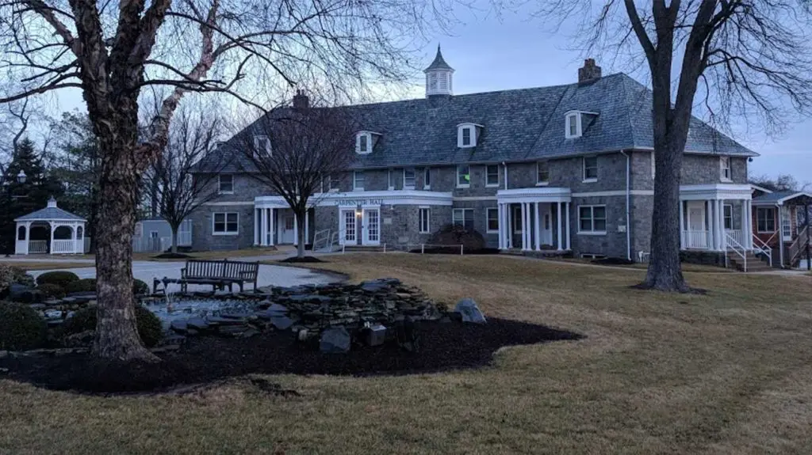
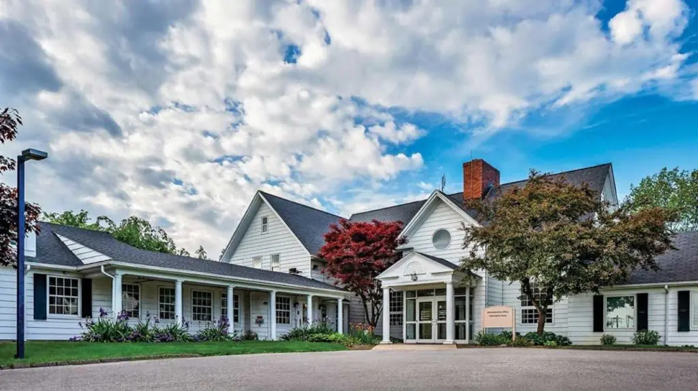
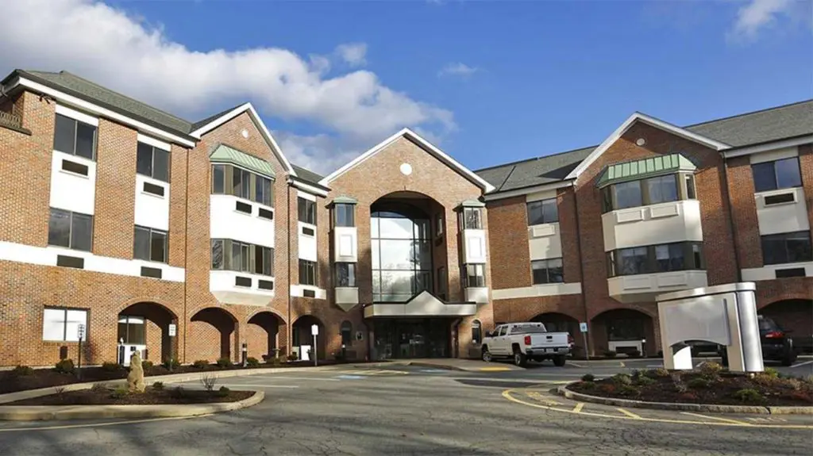
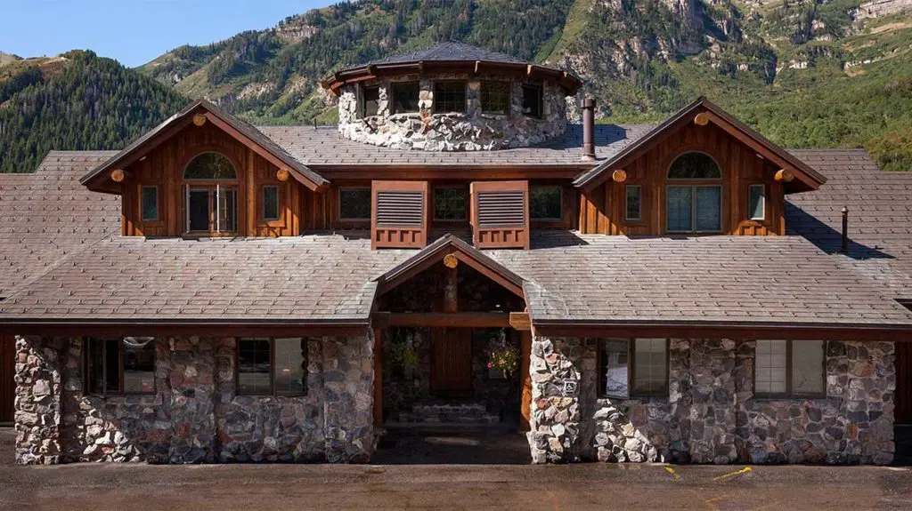
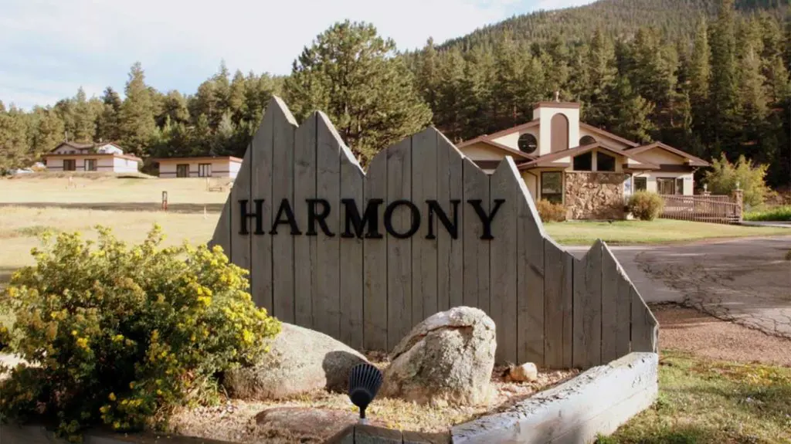
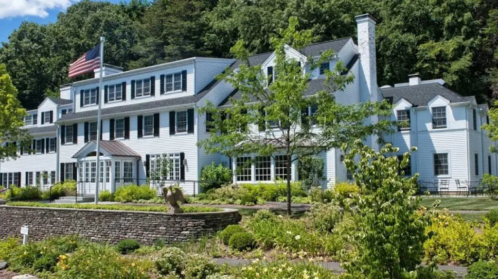
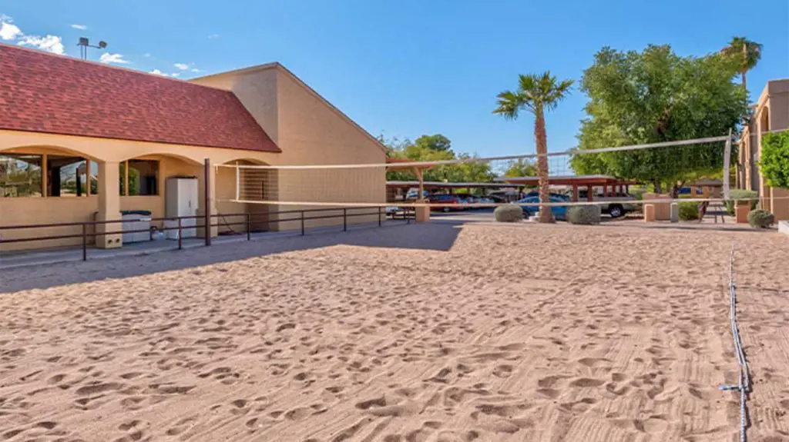

The Best Rehab Centers In the United States
Ashley Addiction Treatment, Maryland
Ashley Addiction rehab is a Maryland rehab center that offers a range of substance abuse treatment programs
Ascension Brighton Center For Recovery, Michigan
The Brighton Center for Recovery was the first established alcohol and drug rehab center in Michigan and the second in the United States.
With over 60 years of experience in treating drug and alcohol addiction, this rehab center recognizes that addiction often requires long-term management
Bedrock Recovery Center, Massachusetts
Bedrock Recovery Center has been dually accredited by CARF and the Joint Commission
Both single and double rooms are available here for those in the inpatient program
The Behavioral Wellness Center At Girard, Pennsylvania
This Pennsylvania behavioral health treatment center offers both substance abuse treatment and dual diagnosis treatment
Cirque Lodge, Utah
Cirque Lodge offers addiction recovery programs in Utah at its serene location in the Rocky Mountains
Elevate Addiction Services, California

Elevate Addiction Services is an inpatient treatment center with two rehab facilities in Santa Cruz and Lake Tahoe. They also have a detox center in Placerville.
Harmony Foundation, Colorado
Harmony Foundation is an inpatient rehab center in Colorado that offers a comprehensive treatment plan for people facing alcohol or drug abuse.
The residential rehab program here provides a clinical assessment, medical evaluation, alcohol and drug detox, and continuing care.
In addition to co-ed inpatient programs, there is also a specialized treatment program for young adults.
Oro House Recovery Centers, California
Oro House is Joint-Commission accredited and offers luxury alcohol and drug rehab programs that follow both holistic and non-12-step approaches.
Silver Hill Hospital, Connecticut
Silver Hill Hospital is an alcohol and drug rehab center in Connecticut that provides inpatient treatment for both youth ages 13 to 17 and adults.
Residential treatment programs include treatment for substance use disorders and co-occurring eating disorders, personality disorders, and other mental health disorders.
Treatment services are backed by Joint Commission accreditation and LegitScript certification.
Hope Of Chandler, Arizona
Valley Hope is a 55-bed, drug and alcohol rehab facility in Arizona that provides both residential and partial hospitalization programs for those in addiction recovery.
Treatment Services are available for adults ages 18 and older.
Drug Treatment Information By State
Click on the links below to find more information about treatment facilities in each state.
Delaware Florida Georgia Hawaii Idaho Illinois Indiana Iowa Kansas Kentucky Louisiana Maine Maryland Massachusetts Michigan Minnesota Mississippi Missouri Montana Nebraska Nevada New Hampshire New Jersey New Mexico New York North Carolina North Dakota Ohio Oklahoma Oregon Pennsylvania Rhode Island South Carolina South Dakota Tennessee Texas Utah Vermont Virginia Washington West Virginia Wisconsin Wyoming
Other Things To Consider